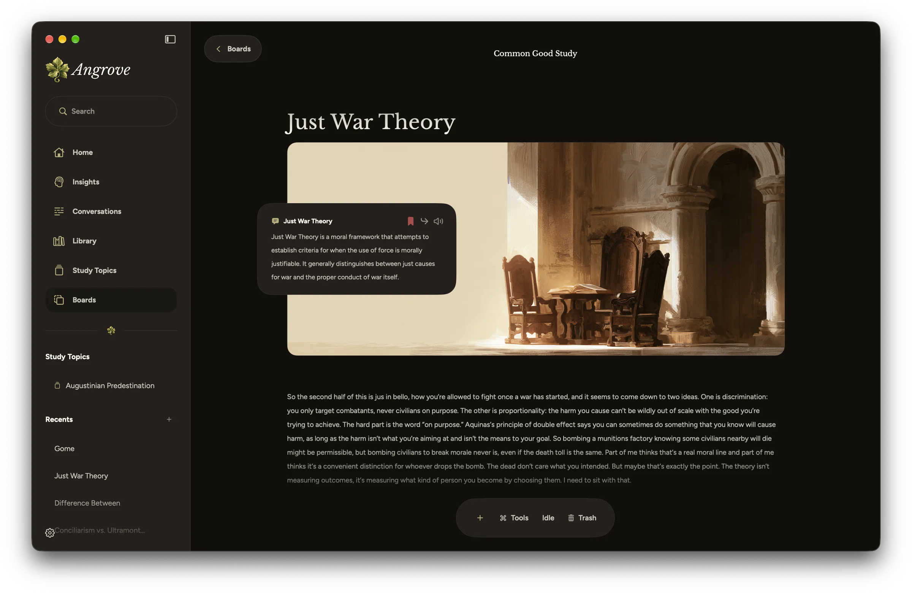
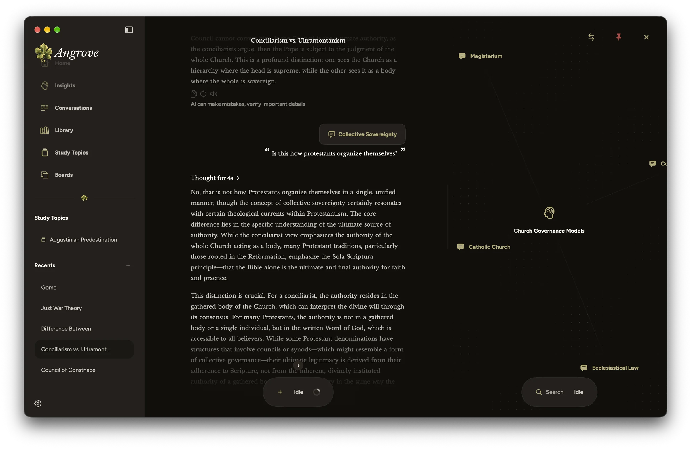

Angrove for Mac · Coming Dec. 15
Built for a Bigger Desk.
A larger screen changes how you study. The Mac app adds three things the iPhone can’t fit.
COMING DEC. 15Download for macOS
Boards
Lay your ideas out.
A Board is an open page for one line of study. Write in your own words, drop in Insights you’ve saved, and set them beside images and headings until the argument has a shape.
Insights on a Board stay live: open one to read it, follow it back to its conversation, or have it read aloud.
Bring it together
Learn easier.
Drag a conversation from Recents onto a Board and it opens right there, ready for a follow-up. Search for an Insight you saved and set it beside the conversation.
Everything you need for one question stays on one page, so you aren’t switching between screens to remember what you found.
Split view
The conversation and its tree, together.
Keep a conversation open on one side and its Insight Tree on the other. As the answer streams in, you can see where each idea connects without leaving the thread.


iPhone now · Mac Dec. 15
Start on iPhone, Continue at Your Desk.
Angrove is free and private, with saved personal data encrypted on your device. The iPhone beta is open now on TestFlight.
Built by Ryan Baltodano · Open to product engineering opportunities and relocation. View my résumé.